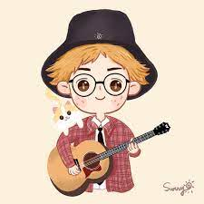
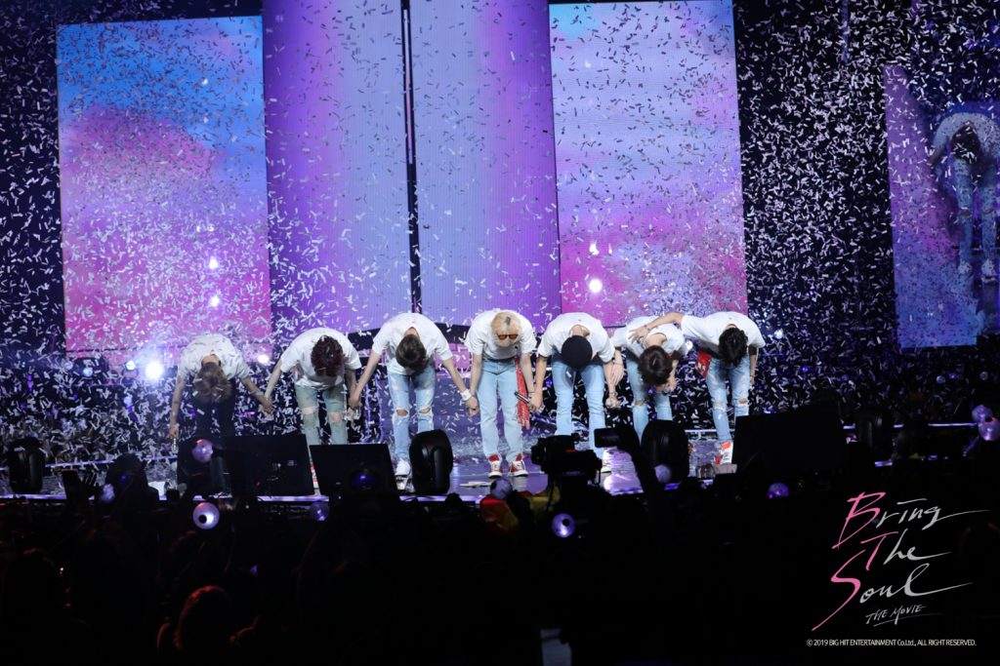

首頁
簡介
興趣
創作
推薦
相關帳號
彈吉他

八年級的時候開始學吉他，就非常喜歡彈吉他帶來的快樂。原本是因為覺得彈吉他的人很帥，才擁有想開始學習他的想法，實際學起來其實也是有一點難度， 所以花了很多時間練習。現在我覺得能用樂器才演奏自己喜歡的歌非常的有趣，也十分有成就感。左圖是我在九年級時班上才藝發表表演的照片。
跳舞
從小的我就很喜歡跳舞，所以在小時候就會上課，雖然中間因為上學所以沒有繼續上，但是休閒時也是會繼續跳舞。現在高中參加了舞蹈性社團，希望自己可 以繼續維持這個興趣。
追星

追星佔據了我生活很大一部份，他不僅僅是一個休閒娛樂，也讓我想要去學習更多的技能精進自己，例如：學韓文、寫作、經營社群。追星還使我衍伸了一個 技能與興趣 _製圖，我也因此去學習部分photoshop的操作方法。